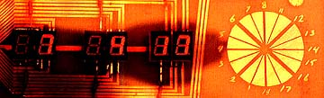

|
1, 2, 3, 4, 5, 6, 7, 8, 11, 12, 13, 14, 15, 16, 17, 18, 21, 22, 23, 24, 25, 26, 27, 28, 31, 32, 33, 34, 35, 36, 37, 38, 41, 42, 43, 44, 45, 46, 47, 48, 51, 52, 53, 54 .... |
|
At A Save The Universe Club we choose to see the world a little differently. In order for you to comprehend any further information about ASTUC you must first understand A Base. This is the way we count. A Base uses the numerals 1,2,3,4,5,6,7 and 8. This is a naturally occurring base that shows no sign of cultural imperialism or numeric mysticism. Follow the logical progression below to learn about A Base. When you can follow this base you are ready to learn about other ASTUC concepts. Just start with the first sum and do it in your head. When you arrive at 4+5=11 just accept that this is the way A Base works. Eleven in A Base represents the same value, or number of things, as nine in base ten. Continue this same operation until you understand multiplication and division. Try writing them down on paper and doing different combinations. E-mail your questions about A Base to :wilf@astuc.ca |
2 4 4 5 6 7 8 11 11 22 22
+2 +4 +5 +5 +6 +2 +8 +8 +11 +6 +7
=4 =8 =11 =12 =14 =11 =18 =21 =22 =28 =31
|
|
If you can open your mind to a different way of thinking about math it makes it easier. In fact this is no more complex than grade five work. |
4 8 11 12 14 11 18 21 22 28 31
-2 -4 -5 -5 -6 -2 -8 -8 -11 -6 -7
=2 =4 =4 =5 =6 =7 =8 =11 =11 =22 =22
|
|
You must know how to add and subtract before you can multiply and divide. |
1*8=8 2*8=18 3*8=28 4*8=38
28=2*8+8 38=3*8+8
=28+8
8*8=78 11*8=88
78=7*8+8 88=8*8+8
=68+8 =82+8
|
| 1 | 2 | 3 | 4 | 5 | 6 | 7 | 8 |
|---|---|---|---|---|---|---|---|
| 2 | 4 | 6 | 8 | 12 | 14 | 16 | 18 |
| 3 | 6 | 11 | 14 | 17 | 22 | 25 | 28 |
| 4 | 8 | 14 | 18 | 24 | 28 | 34 | 38 |
| 5 | 12 | 17 | 24 | 31 | 36 | 43 | 48 |
| 6 | 14 | 22 | 28 | 36 | 44 | 52 | 58 |
| 7 | 16 | 25 | 34 | 43 | 52 | 61 | 68 |
| 8 | 18 | 28 | 38 | 48 | 58 | 68 | 78 |
|
Now that you know A Base you can understand other ASTUC concepts. If you are interested in A Base there is work to be done. Conventions need to be devised to apply A Base to different problems. For example, the representation of fractions is preferred over decimal style notation. Let me know of any ideas. |
|
|
|
|
|
|